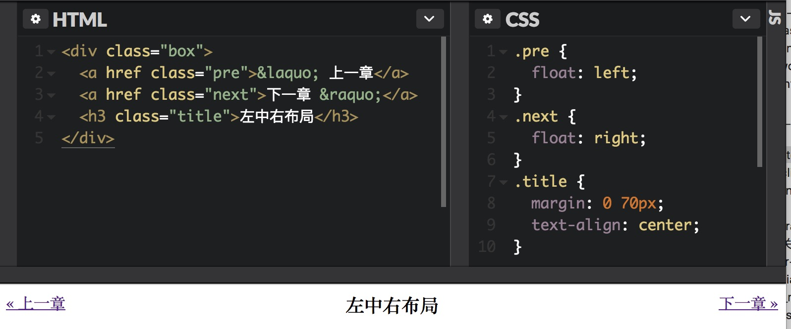
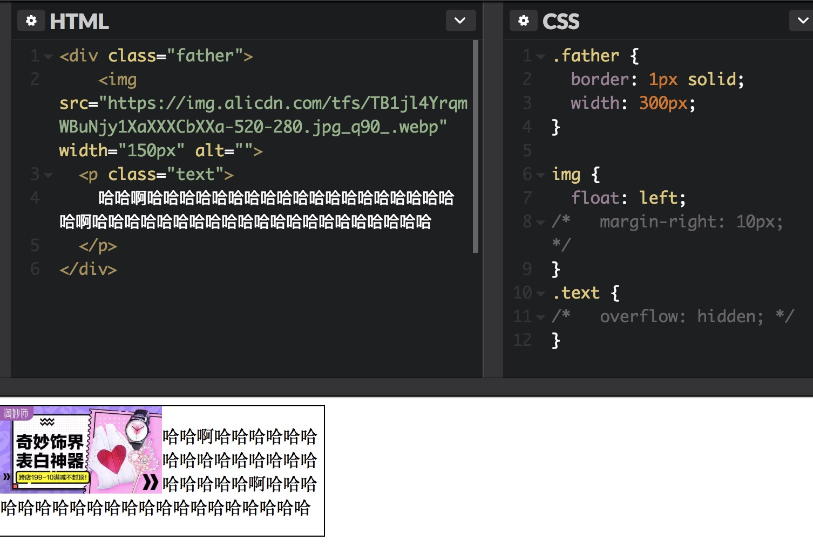
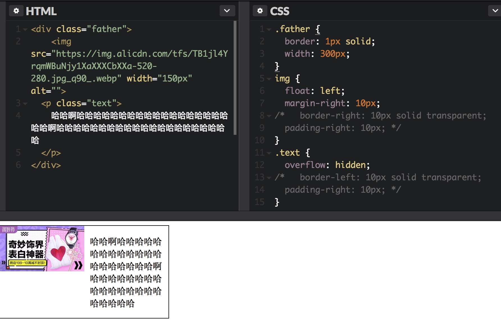

float
- 理论
浮动的本质是为了实现文字环绕效果，为了实现该效果，有两个要点
- 被环绕的元素挣脱其父元素的束缚，让底下跟随的元素可以和浮动元素在一个水平线上（浮动元素脱离了文档流，其父元素的高度无法由其撑开）
- 底下的元素上移之后不会覆盖浮动元素（行框盒子和浮动元素不可重叠），表现出围绕效果
例子
注意这个例子
这里例子中，为了不影响下面的元素，将父元素和浮动元素设置成一样的高度，但是由于前面章节中提到过的“幽灵节点”，导致img标签的父级元素高度比设置的图片高度要大，因此father元素下面的文字也受到该浮动元素的影响，产生了环绕效果。解决的方法是去掉“幽灵节点”。但是最根本的方法还是清除浮动带来的影响。术语
- “浮动锚点”是float元素所在“流”中的一个点，这个点本身并不浮动，更像一个没有margin、border和padding的空的内联元素（内联元素产生行框盒子）
- “浮动参考”指的是浮动元素对齐参考的实体（css中浮动元素的“浮动参考”是“行框盒子”）
例子
利用float实现两栏一侧定宽的自适应布局
右侧的元素没有浮动也没有设置宽度，很好的保留了流动性例子
中间内容居中的左中右布局
左右元素浮动，中间的元素设置左右margin
理解
clear属性是让自身不能和前面的浮动元素在一行显示，clear: left是不和前面左浮动的元素在一行显示，clear: right是不和前面右浮动的元素在一行显示。
clear属性只有块级元素才有效，而::after等伪元素默认都是内联水平，因此必须设置display值`理论
触发BFC的情况
- 根元素
- float的值不为none
- overflow的值为auto、scroll或hidden
- display的值为table-cell、table-caption和inline-block中的任何一个
- position的值不为relative和static
例子
普通流体元素设置overflow: hidden后（BFC），会自动填满容器中除了浮动元素以外的剩余空间，形成自适应布局效果。可以通过给浮动元素加margin-right padding-right border-right或者给非浮动元素加padding-left border-left来设置间隙。但是注意给非浮动元素设置margin-left的话，值就不是间隙的值，还要根据浮动元素的宽度来设置。

总结
产生BFC属性的适用情况
overflow: auto/hidden适用于IE7及以上版本浏览器display: inline-block适用于IE6及IE7，在IE6和IE7下，设置display: inline-block属性的元素还是block水平display: table-cell适用于IE8及以上浏览器
overflow
规范
overflow的剪裁边界是border box的内边缘理解
如果overflow-x和overflow-y属性值中有一个设置为visible而另外一个设置为scroll、auto或hidden，则visible表现样式会如同auto。即永远不可能实现一个方向溢出剪裁或滚动，另外一个方向内容溢出显示的效果。理解
PC端滚动条一般会占据容器的可用高度或者宽度，移动端一般滚动条一般都是都是悬浮模式，不用占用宽度。PC滚动条宽度一般是17px-webkit- 自定义滚动条
- 整体部分
::-webkit-scrollbar - 两端按钮
::-webkit-scrollbar-button - 外层轨道
::-webkit-scrollbar-track - 内层轨道
::-webkit-scrollbar-track-piece - 滚动滑块
::-webkit-scrollbar-thumb - 边角
::-webkit-scrollbar-corner
- 例子
单行文字溢出省略1
2
3
4
5.text {
text-overflow: ellipsis;
white-space: nowrap;
overflow: hidden;
}
两行文字溢出省略1
2
3
4
5.text-two-line {
display: -webkit-box;
-webkit-box-orient: vertical;
-webkit-line-clamp: 2;
}
- 锚点定位
锚点跳转方式1
2<a href="#1"></a>
<h3 id="1"></h3>
以下两种情况可以触发锚点定位行为：1、url地址中的锚链与锚点元素对应并且有交互行为；2、可focus的锚点元素处于focus状态时发生页面重定位。第一中方式定位的时候是让元素定位在浏览器窗体的上边缘，因此当定位元素不是在浏览器窗体上边缘时一定会发生页面滚动，第二种方式则只是让元素在浏览器窗体范围内显示，不一定会发生页面滚动。
返回顶部的效果可以使用简单的#作为锚链，则此时是定位到页面的顶部。1
<a href="#">返回顶部</a>
锚点定位注意以下两点：1、定位是由内而外的，也就是普通元素和窗体同时可滚动的时候，会由内而外触发所有可能滚动的窗体的锚点定位行为；2、设置了overflow: hidden的元素也可以“滚动”，这里指的滚动是可进行锚点定位
absolute
注意
绝对定位元素height: 100%是第一个具有定位属性值的祖先元素的高度，且是祖先元素的padding box高度（普通元素是content box）。height: inherit是单纯的父元素的高度继承。对于普通元素来说两个属性一样。理解
绝对定位元素的“宽度自适应性”和“包裹性”1
2
3
4
5.box {
position: absolute;
}
<div class="box">文字内容</div>
如上简单代码，文字原来越多时，div的宽度会跟随文字变多而变宽，此为“宽度自适应”。当到达该元素的“包含块”（最近的position不为static的祖先元素）的宽度时，文字内容就会换行，此为“包裹性”。绝对定位元素默认最大宽度就是“包含块”的宽度。当然可以设置文字不换行来改变“包裹性”为“最大可用宽度”
注意
一个绝对定位元素，如果没有设置任何left/top/right/bottom属性，并且其祖先元素全部都是非定位元素时，该元素还是在当前位置，只不过是脱离了文档流。可见demo。可用在各种图标定位，代码简洁且便于维护。
且可以利用此特性在“包含块”中添加一个空白元素，再利用text-algin改变空白符位置。此时在空白符后面的绝对定位元素（或固定定位元素）由于该特性会随着空白符位置一起动。如demo理解
absolute的流体特性。注意以下这两种写法的差异。第一种是格式化宽度，宽度大小自适应于包含块的padding box。
如果给两者都加上padding，则前者宽高依旧是包含块的宽高，而后者则是100% + 60px。设置了对立定位属性的绝对定位元素，无论设置padding还是margin，其占据的空间一直不变，变化的是content box的大小。（和div的流体特性一样）1
2
3
4
5
6
7
8
9
10
11.box1 {
position: absolute;
top: 0; bottom: 0; left: 0; right: 0;
// padding: 30px;
}
.box2 {
position: absolute;
top: 0; left: 0;
width: 100%; height: 100%;
// padding: 30px;
}
relative
注意
relative定位无“侵入性”，即只会影响自己的偏移位置，不会影响其它元素的位置，可以与margin-top: -10px类比。注意
relative定位是相对自身偏移，但是在设置left/top/right/bottom百分比值的时候，还是相对包含块计算的。注意
当相对定位元素同时应用对立方向定位值的时候，只有一个方向的属性会起作用，先后顺序是按照文档流，默认文档流是自上而下，从左往右。布局实践原则
最小影响化，即在要设置position: relative时，尽量加在更小层级的元素上。relative会影响元素的层级，相比与普通元素，relative定位元素的层级更高，可能出现“覆盖”bug。并且使用该原则会利于日后维护，不需要该元素时直接移除即可，不必担心会有其它样式是依赖该relative定位元素，减少无用代码。